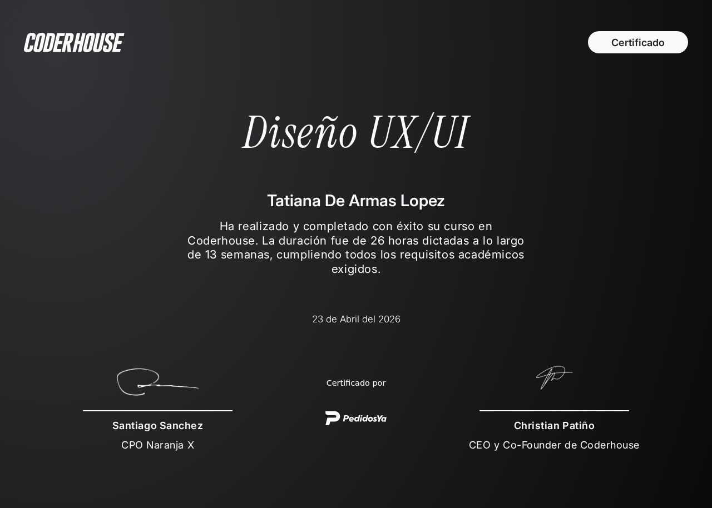
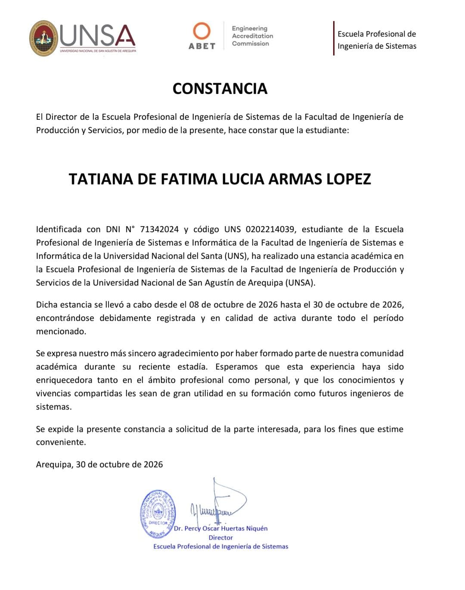
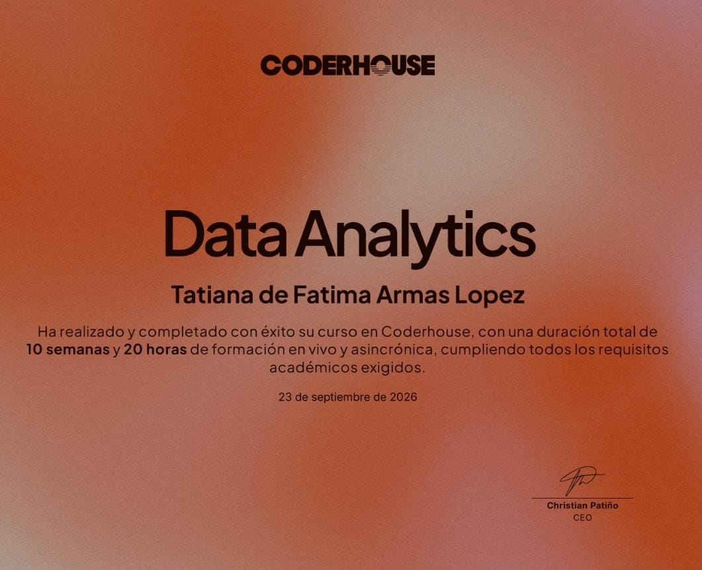
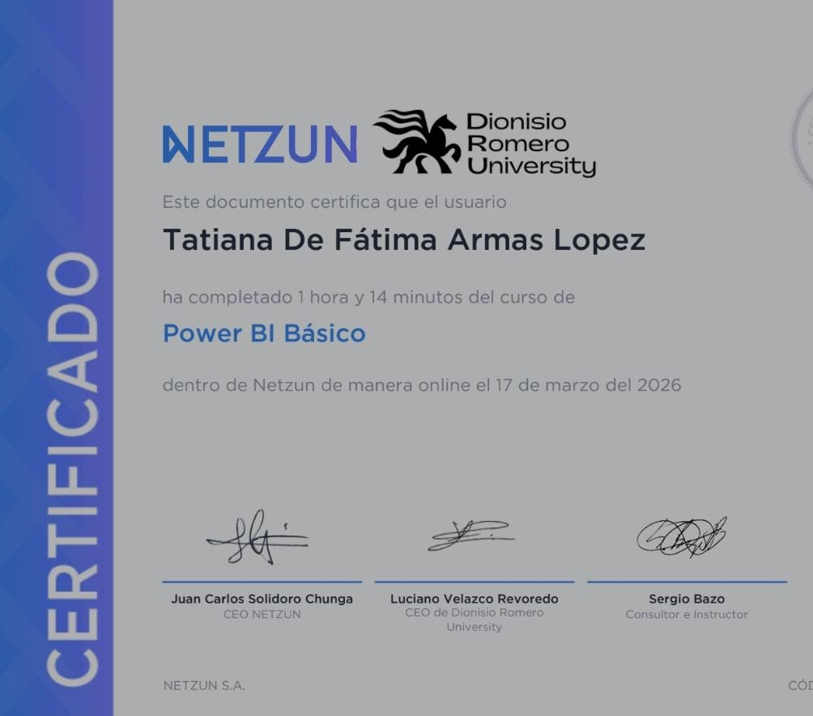

Certificación de UX-UI
Obtención del certificado que acredita la culminación exitosa de todos los módulos del nivel intermedio de inglés, validando comprensión lectora, auditiva y expresión oral.

Obtención del certificado que acredita la culminación exitosa de todos los módulos del nivel intermedio de inglés, validando comprensión lectora, auditiva y expresión oral.

Certificación otorgada tras completar satisfactoriamente el programa de pasantía en la ciudad de Arequipa, aplicando conocimientos técnicos en un entorno real.

Certificación otorgada tras completar satisfactoriamente el programa de Data Analytics.

Espacio reservado para añadir el próximo diploma o certificación obtenida durante el cierre del año académico y profesional.